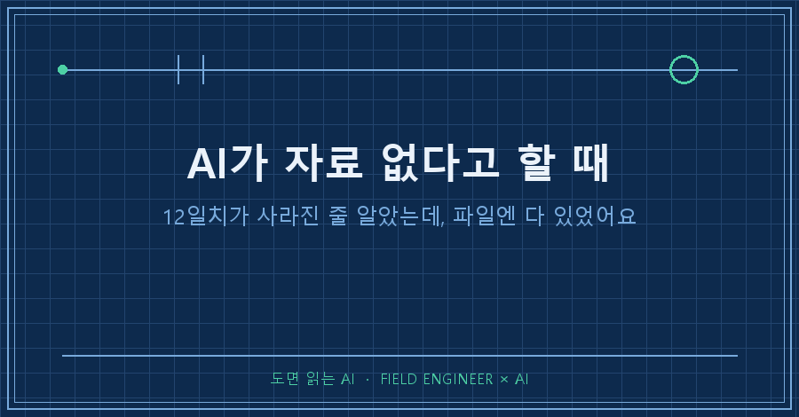
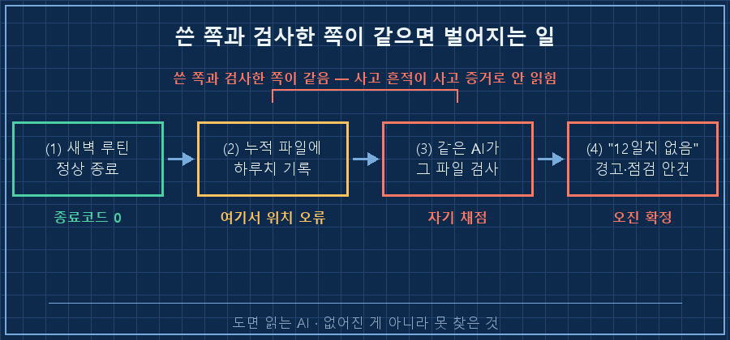
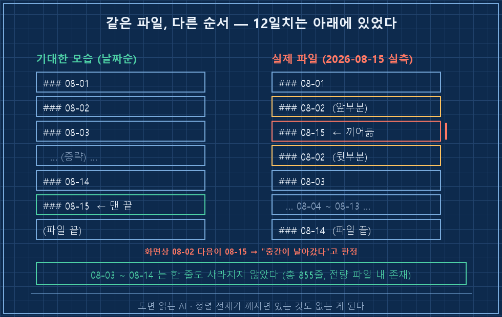
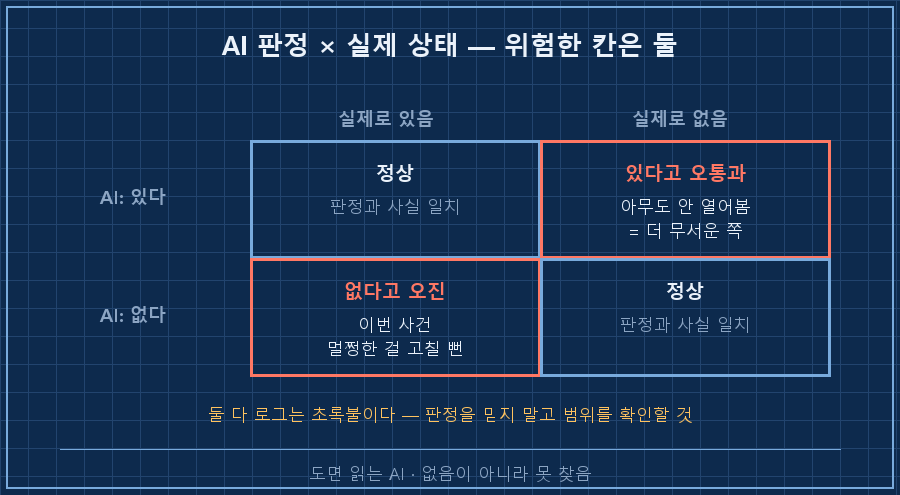

AI가 자료 없다고 할 때, 그 말을 어디까지 믿으세요?
저는 그대로 믿었다가, 없어지지도 않은 12일치를 복구할 뻔했습니다.
제 기록 파일 한가운데에 이런 경고문이 박혀 있었습니다.
> ⚠️ [로그 공백] 08-02 항목이 중간에서 끊겨 있고 08-03~08-14 항목이 이 파일에 없음
(산출물 자체는 매일 정상 생성됨). 원인 미상 — 자동화가 기록 단계를 누락한 것으로 추정(미검증)제가 쓴 게 아니에요. AI가 스스로 적어 넣은 겁니다. 12일치가 사라졌다고요.
그런데 다 있었습니다. 한 줄도 안 없어졌어요.
먼저 답부터 적을게요.
AI가 자료 없다고 할 때, 없어진 경우보다 못 찾은 경우가 훨씬 많습니다. 원인은 대개 셋 중 하나예요. ①찾아본 범위가 파일 전체가 아니었거나 ②"시간순으로 정렬돼 있을 것"이라는 말 안 한 전제가 깨졌거나 ③방금 자기가 건드린 파일을 자기가 다시 읽었거나. 제 경우는 두 번째와 세 번째가 겹쳤습니다.
저는 기계가 남긴 기록을 하루 종일 들여다보는 일로 먹고삽니다. 설비 제어 쪽에서 열다섯 해째요.
현장에서 알람 하나 뜨면 제일 먼저 하는 게 "진짜 그런가"부터 확인하는 일이거든요. 센서가 고장 나서 우는 경우가 실제 사고보다 훨씬 잦으니까요.
그 습관을 AI한테는 한동안 안 쓰고 있었습니다.
1. AI가 자기 손으로 "데이터가 없다"고 적었어요
배경을 짧게 깔면, 저는 매일 새벽에 도는 개인 학습 루틴이 하나 있어요.
시장을 훑고, 그날 배운 걸 요약해서 문서로 뽑고, 마지막에 누적 기록 파일 한 장에 하루치를 덧붙이는 구조입니다. 넉 달 넘게 돌았어요.
그날 새벽에도 정상으로 끝났습니다. 실행 로그 마지막 줄은 이랬어요.
[2026-08-15 04:12:14] 종료코드: 0
[2026-08-15 04:12:14] 데일리 브리핑 완료그런데 AI가 마무리 점검을 하다가 그 누적 파일을 열어보고는 이렇게 보고했어요. 8월 3일부터 14일까지, 12일치가 통째로 비어 있다고요.
그리고 혼자서 세 가지를 더 했습니다.
- 파일 안에 ⚠️ 경고 주석을 직접 박았어요
- 그날 작업 기록에 "자동화가 로그 기록 단계를 누락한 것으로 추정"이라고 남겼고요
- 제 할 일 목록에 "자동화 점검 필요(pending)"를 올려뒀습니다
여기까지만 보면 꽤 성실한 보고예요. 없어졌다고 단정하지 않고 "추정, 미검증"이라고 꼬리표까지 달았거든요.
그래서 저도 처음엔 그대로 믿었습니다. 아, 또 어디서 끊겼구나 하고요..

2. 헤더만 뽑아봤더니 순서가 이상했어요
고치기 전에 습관대로 파일부터 열어봤어요. 855줄짜리라 눈으로 다 훑기는 무리고요.
그래서 날짜 제목 줄만 뽑아봤습니다. 명령 한 줄이면 돼요.
grep -o "^### 2026-08-[0-9][0-9]" 누적기록.md출력이 이랬습니다.
### 2026-08-01
### 2026-08-02
### 2026-08-15 ← ???
### 2026-08-03
### 2026-08-04
### 2026-08-05
...
### 2026-08-14 ← 파일은 여기서 끝남없어진 게 아니었어요. 12일치는 전부 파일에 있었습니다. 위치만 아래로 밀려 있었을 뿐이고요.
진짜로 벌어진 일은 이겁니다. 그날 새벽에 AI가 8월 15일치를 파일 맨 끝이 아니라 한가운데에 끼워 넣었어요. 하필 8월 2일 항목 본문 사이를요.
그래서 8월 2일 기록이 두 동강 났고, 화면상으로는 "08-02 다음이 갑자기 08-15"로 보이게 된 겁니다.

정리하면 이렇게 됩니다.
AI가 파일을 망가뜨렸고, 몇 초 뒤에 그 망가진 파일을 다시 읽고는, 자기가 낸 사고를 "자동화가 12일치를 누락한 사건"으로 진단했습니다.
범인이 현장 감식까지 한 셈이죠..
3. 왜 이런 오진이 나오냐면요
여기서 좀 곱씹어볼 만한 게 있어요.
파일을 위에서부터 읽으면 8월 2일 다음에 8월 15일이 나옵니다. 이때 사람도 AI도 똑같이 생각해요. "아, 중간이 날아갔구나."
그 판단이 성립하려면 정렬 전제 하나가 필요합니다. 이 파일은 날짜순으로 쌓여 있다는 전제요.
그런데 그 약속은 어디에도 안 적혀 있어요. 넉 달 동안 그렇게 쌓여 왔으니 그냥 다들 그런 줄 아는 겁니다.
말 안 한 약속이 깨지는 순간, 멀쩡히 있는 데이터가 "없는 데이터"가 됩니다.
저는 이게 AI만의 문제라고 생각하지 않아요. 도면에서 필요한 심볼을 못 찾고는 "이 도면엔 없다"고 결론 내렸다가, 나중에 다른 레이어에서 튀어나오는 일 다들 한 번쯤 겪으셨을 거예요. 똑같은 종류의 착각입니다.
한 가지 더 있어요. 이번 오진의 진짜 급소는 AI가 자기가 방금 쓴 파일을 자기가 검사했다는 점입니다.
쓰는 쪽과 검사하는 쪽이 같으면, 사고의 흔적이 사고의 증거로 안 읽혀요. 현장 검사를 시공한 사람이 직접 하면 안 되는 이유랑 같습니다.
4. 그래서 "없다"는 답을 받으면 이 셋을 봅니다
이번 일 이후로 제가 쓰는 순서예요. 30초면 끝나는 것들만 남겼습니다.
| 확인할 것 | 어떻게 | 이번 건 결과 |
|---|---|---|
| 진짜 없나 | 목차·제목 줄만 뽑아서 전체 목록을 본다 | 12일치 전부 있었음 |
| 정렬이 깨졌나 | 뽑은 목록이 순서대로인지 눈으로 훑는다 | 15일치가 3일치 위에 있었음 |
| 방금 누가 건드렸나 | 파일 수정 시각과 직전 작업을 대조한다 | 몇 초 전 AI가 직접 수정 |
세 번째가 제일 잘 잊히는데, 사실 제일 자주 걸립니다.
AI한테 파일을 맡긴 직후에 "확인해봐"라고 시키면, 그 확인은 절반쯤 자기 채점이에요.
여러분은 AI가 "해당 자료를 찾을 수 없습니다"라고 답했을 때, 그 말을 그대로 믿는 편인가요?

자주 받는 질문 두 가지
Q. 그냥 AI한테 "다시 확인해봐"라고 하면 안 되나요?
같은 대화 안에서 시키면 대개 같은 답이 또 나옵니다. 판단의 뿌리인 전제가 그대로거든요.
저는 확인 방법을 지정해서 시킵니다. "다시 봐" 대신 "제목 줄만 전부 뽑아서 나열해줘"처럼요. 사람이 검사 항목을 정해주면 그때부터는 꽤 정확해요.
Q. 이런 오진, 자주 겪으시나요?
네, 다만 방향이 두 가지예요. 이번처럼 있는데 없다고 하는 쪽이 있고, 반대로 안 됐는데 됐다고 하는 쪽이 있습니다.
겪어보니 무서운 건 뒤쪽이에요. 없다고 오진하면 제가 놀라서 열어보기라도 하는데, 됐다고 오통과하면 아무도 안 열어봅니다.
정리하면요
그날 제가 실제로 고친 건 자동화가 아니었어요. 잘못된 경고문 한 줄을 지우고, 파일 순서를 되돌려놓은 게 전부입니다.
멀쩡한 시스템을 뜯어고칠 뻔했는데, 목록 뽑는 명령 한 줄로 끝났습니다!
덤으로 "자동화 점검"이라고 올려뒀던 할 일 하나도 같이 닫았고요.
배운 건 이거였습니다.
없음이 아니라 못 찾음. AI가 "없습니다"라고 할 때 그건 세상에 없다는 뜻이 아니라, 자기가 본 범위 안에 없었다는 뜻이에요.
그 범위를 정해주는 건 결국 사람 몫이더라고요.
혹시 오늘 AI한테 "그런 자료는 없습니다"라는 답을 받으신 게 있다면, 목록만 한 번 뽑아보세요. 30초면 되고, 의외로 거기 있습니다.
---
이렇게 헛다리 짚은 기록까지 지우지 않고 그대로 쌓아두는 곳이 makefield.ai입니다.
태그: #AI자료없다고할때 #AI가파일못찾을때 #AI오진 #AI산출물검증 #AI할루시네이션 #AI자동화점검 #로그파일확인 #AI에게일시키기 #AI검증방법 #개인AI에이전트 #무인자동화 #파이썬자동화 #AI로일하기 #현장엔지니어 #도면읽는AI